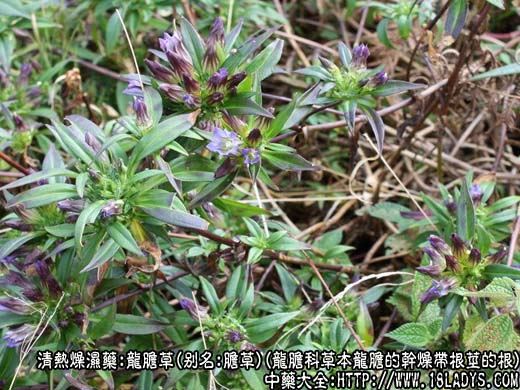
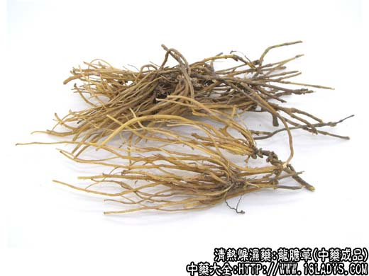
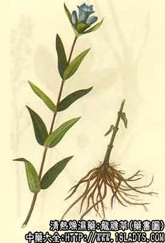

龙胆草为常用中药。《神农本草经》列为中品，商品龙胆的来源，主要为植物龙胆及其同属的数种近似植物。因品种产区的不同，产品性状亦有差异，习惯多冠以地名，如关、云、苏、山、水等字样以资区别，但均同等药用。现京津习销品主要分关龙胆和云龙胆两类。
别名：龙胆，胆草。
来源：关龙胆：为龙胆科多年生草本植物龙胆和三花龙胆的干燥带根茎的根。多为野生。
云龙胆：为龙胆科多年生草本植物坚龙胆的干燥带根茎的根。药用以根为主。野生。
产地：关龙胆（东胆草）：主产于黑龙江、吉林、辽宁、内蒙古等地。云龙胆：主产于云南、四川、贵州等地。均为野生。
性状鉴别：关龙胆：根茎呈不规则块状，顶端有残留茎基，根丛生，细长而直如马尾状，上粗下细或稍弯曲。长约10～20厘米，直径2～3毫米。表面黄棕色，上部有细密横纹，下部有细纵纹。质脆易折断。断面淡黄色，显筋脉花点。气弱，味极苦。
以根条粗长，黄色及黄棕色者为佳。
云龙胆：根茎呈不规则的结节状，顶端留有森质茎杆，其下生数至十数条根。根弯曲，粗细不一，长5～20厘米，上部直径1～3毫米。表面棕红色，多纵皱纹而无环行横纹。质坚脆，角质，易折断。断面中央有黄色木心，无髓。气弱，味极苦。
以根细长，茎杆短，色棕黄至棕红者为佳。
主要成分：含龙胆苦甙、龙胆甙、龙胆素、龙胆三糖。
功效与作用：1、健胃。促进胃液分泌，使游离酸增加，有效成分为龙胆苦甙，但过量则反致恶呕吐。
2、消炎、解热。
炮制：切咀，生用。
性味：苦寒。
归经：入肝、胆、膀胱径。
功能：清肝胆实火，泻下焦湿热。
主治：肝胆湿热郁火之日赤头晕，耳聋，耳肿，胁痛口苦，惊痫抽搐，湿热疮毒等症。
临床应用：1、用于泻肝胆实火。凡有口苦、胁痛、目赤肿痛、耳聋耳肿、尿血尿涩尿痛、性情暴躁（大致包括急性肝炎，膀胱、尿道炎，急性眼结膜炎等），都可用龙胆草、常配栀子、柴胡、 黄芩等，方如龙胆泻肝汤。如属胆囊炎，则可以龙胆草3g煎水，送服左金丸3g每日二至三次，更能加强清泄肝胆实热的作用。
2、用于健胃。有胃粘膜脱垂、慢性胃炎，出现口干、舌光剥无苔食欲减退、食后腹胀等症状时，可用龙胆草3g，配合清养胃阴的药物（如沙参、麦冬、石斛、天花粉等），水煎服，效果颇好。宜于饭前10～30分钟服。
3、用于解痉。治小儿高热抽搐，可配合平肝清热药（如石决明、羚羊角、钩藤等），加入龙胆草3g，疗效更速。
使用注意：前人经验认为龙胆草有泻无补，脾胃虚弱者易致呕吐，久用更易伤胃气，对胃有刺激作用，不要多用久用。无实火者不要用。
用量：3～9g。
处方举例：龙胆泻肝汤（《医宗金鉴》）：龙胆草9g，柴胡6g，栀子9g，黄芩9g，生地18g，泽泻9g，当归6g，车前子6g（布包），木通9g，甘草3g，水煎服。
注：1、四川以带根全草称“龙胆草”，销省内，根茎及根称“龙胆根”，省内外均销。
2、浙江、安徽、江苏产地的龙胆，在市场上有山龙胆和水龙胆之分。前者生于山野，根条粗壮，黄棕色，与关龙胆相同，产于浙江建德（旧严州）称严龙胆，品质尤佳。后者多产于江苏北部水沼湿地，根条瘪瘦，灰褐色，横纹多，质次（北京、天津称苏龙胆）。两者的植物来源，均与关龙胆相同，现均并入关龙胆内。